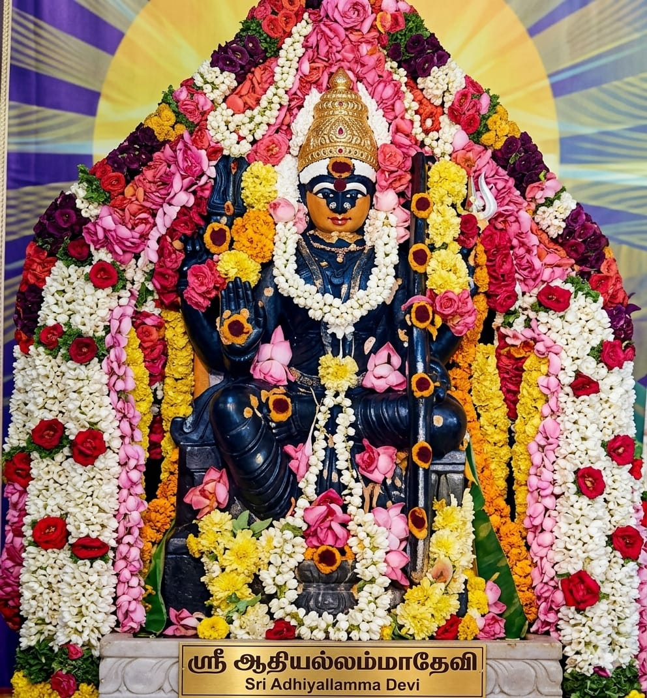

🔔 அறிவிப்பு:ஸ்ரீ மல்லம்மா தேவி துணை! 🙏✨ | 🔔 Announcement:May Goddess Mallamma Devi be your support! 🙏✨

ஸ்ரீ மல்லம்மா தேவி கோவில் - தேன்கனிக்கோட்டை பகுதியில் அமைந்துள்ள ஒரு புனிதமான தெய்வ ஸ்தலம் ஆகும். அம்மன் அருளால் பக்தர்களின் வாழ்வில் அமைதி, வளம் மற்றும் நலன் கிடைக்கிறது. இங்கு நடைபெறும் பூஜைகள் மற்றும் திருவிழாக்கள் பக்தர்களின் நம்பிக்கையை மேலும் உயர்த்துகின்றன. மேலும், கோவிலின் கட்டுமான பணிகள் தற்போது நடைபெற்று வருகின்றன. பக்தர்களின் ஆதரவு மற்றும் தானங்களின் மூலம் கோவில் விரைவில் முழுமையாக கட்டப்படும். அனைவரும் இந்த புனித பணியில் கலந்து கொண்டு ஆதரவு வழங்குமாறு அன்புடன் கேட்டுக்கொள்கிறோம்.
பட்டாளம்மன் மேன் ரோடு, தெலுங்கு பள்ளி அருகில், தேன்கனிக்கோட்டை, கிருஷ்ணகிரி மாவட்டம், தமிழ்நாடு.